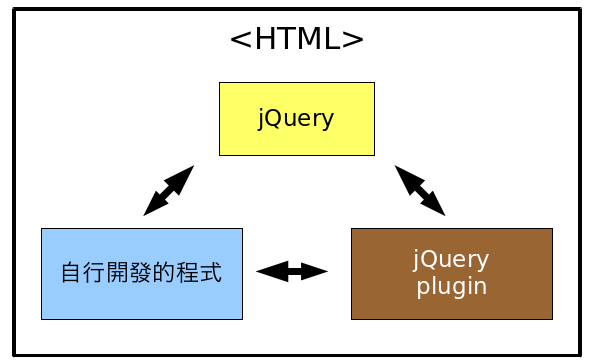

授權流言終結者#3：jQuery 授權的分析與探討

1. 前言
「The Write Less, Do More, JavaScript Library」是 jQuery 專案的口號，是一個能夠提供既簡潔又快速的 JavaScript 函式庫。它簡化了 HTML 文件格式的解析、事件驅動與動畫的處理、以及提供網頁快速開發的 Ajax 互動功能。jQuery 旨在改變我們編寫 JavaScript 的方式，是目前最受歡迎的 JavaScript 函式庫之一。
jQuery 專案始於 2006 年 1 月 John Resig 在 BarCamp NYC 上所釋出第一版本，並於 2009 年 1 月 14 日的 1.3 版中，將著名的跨瀏覽器選取引擎 Sizzle 納入核心的功能中。
隨著國內外 jQuery 專案的興起，愈來愈多相關的著作權議題也開始浮現。本篇文章將以 jQuery 專案為實例，蒐集並探討常見的問題及誤解。
2. jQuery 的授權分析
根據 jQuery 官方網站的著作權授權專頁 的說明。
▲ 圖1：jQuery 官方網站的著作權授權專頁
其中我們可以發現 4 項需要特別注意的地方。
2-1. 著作權網頁標頭處的「雙重授權聲明」
在 jQuery 官方網站的著作權授權專頁的標頭處顯示著下列文字內容：
You may use any jQuery project under the terms of either the MIT License
or the GNU General Public License (GPL) Version 2.
意謂著 jQuery 專案使用的是 MIT 及 GPL-2.0 雙重授權模式。表示任何人使用 jQuery 時，可以遵循 MIT 授權條款或者 GPL-2.0 授權條款，而選擇的權利由使用人來決定即可。
2-2. 許可的例外範圍聲明
在 jQuery 官方網站的著作權授權專頁 的第三段前句指出：
You don't have to do anything special to choose one license or the other
and you don’t have to notify anyone which license you are using. (...)
該段表示，使用 jQuery 專案時使用者不需特別聲明是使用何種授權條款。因此，雖然 jQuery 使用的是 MIT 及 GPL-2.0 雙重授權模式，但使用者在使用時可以不需聲明採行何種，但倘若有特別的原因，例如為解決授權相容性的問題時，仍然建議要選定其中一種為其授權來散布。
2-3. 進行商業應用時規定
在 jQuery 官方網站的著作權授權專頁 的第三段後句指出：
(...) You are free to use a jQuery project in commercial projects as long as the copyright header is left intact.
如果使用者所進行的活動為商業應用時，jQuery 仍然允許自由／免費的使用，只要在專案中保留適當的著作權聲明 (Copyright header) 即可。
2-4. 相依的第三方專案
在 jQuery 官方網站的著作權授權專頁 內文後面指出：
The Sizzle selector engine (which is included inside the jQuery library)
is held by the Dojo Foundation and is licensed under the MIT, GPL, and
BSD licenses.
自從 jQuery 釋出 1.3 版後，已將著名的跨瀏覽器選取引擎 Sizzle 納入核心的功能中。
不管根據 jQuery 網站上的說明，或者是 Sizzle 著作權的聲明，都顯示 Sizzle 使用的是「三重授權模式」。表示任何人使用 Sizzle 時，可以遵循 MIT 授權條款，或 BSD-3-Clause 授權條款，或者 GPL-2.0 授權條款，而選擇的權利由使用人來決定即可。
3. jQuery 授權常見的誤解及探討
3-1. jQuery 是否可以進行商業應用？
根據本篇文章第 2-3 部分『進行商業應用的遵守規定』所述，jQuery 進行商業應用時，只要在專案中保留適當的著作權聲明 (Copyright header) 即可自由／免費的使用。
再根據第 2-1 部分『著作權網頁標頭處的「雙重授權聲明」』所述，jQuery 專案使用的是 MIT 及 GPL-2.0 雙重授權模式。此時無論是使用 MIT 授權條款或者 GPL-2.0 授權條款，在商業應用或非商業應用上都是可行的，並不需要額外支付著作權費用。
但需要注意的是，無論最終是採行何種授權條款，仍然需要符合該條款的要求，例如若是 GPL-2.0 則必須提供相關程式的原始碼。
3-2. jQuery 與其它授權條款相容性的問題
根據本篇文章第 2-1 部分『著作權網頁標頭處的「雙重授權聲明」』所述，jQuery 專案可以使用的授權是 MIT 或 GPL-2.0。
其中 MIT 授權條款是個非常友善的授權，幾乎可以與其它授權條款相結合，例如包含但不限於 MIT，BSD-2-Clause，BSD-3-Clause，BSD-4-Clause、GPL-2.0、GPL-3.0，或甚至是商業授權條款等。唯如果與互惠性更強烈的授權條款互動時，則 jQuery 的 MIT 授權需要以再授權的方式轉換為該授權。例如當採行 MIT 授權的 jQuery 與其它 GPL-3.0 授權之程式互動時，則 jQuery 需要由 MIT 再授權為 GPL-3.0 授權條款來散布。
反之，若使用 GPL-2.0 授權條款時，因本身是個互惠性較強的條款，所以後續與其它專案使用時受限較多。例如，不得與其它 BSD-4-Clause、GPL-3.0 或 AGPL-3.0 授權之程式互動。以前例而言，此時的 jQuery 因相容性關係是無法與其它 GPL-3.0 授權之程式互動的。
因此，無論是商業用途之利用，或者是相容性之考量，jQuery 選擇 MIT 授權會是個比較好的方式。
3-3. jQuery 延伸的應用及外掛 (Plugin) 是否需要公開程式原始碼？
一般而言，jQuery 實務上的應用範例會以下圖的結構來呈現，
▲ 圖2：jQuery 範例結構圖
上述「自行開發的程式」可以是單純呼叫 jQuery 的函式，或者是經由 jQuery 外掛來使用的程式。
根據本篇文章第 2-1 部分『著作權網頁標頭處的「雙重授權聲明」』所述，jQuery 專案可以使用的授權是 MIT 或 GPL-2.0。
如果 jQuery 使用的是 GPL-2.0 授權時，此時 jQuery 外掛程式在授權的選用上，除了該授權條款需要與 GPL-2.0 相容外，最終整個 jQuery 外掛程式也都需要改以 GPL-2.0 授權公開程式原始碼。而「自行開發的程式」也因具備與 GPL-2.0 程式互動的關係，同樣也需要使用 GPL-2.0 授權公開程式原始碼。
反之，如果 jQuery 使用的是 MIT 授權時，此時 jQuery 外掛程式的選用就非常彈性。同時「自行開發的程式」除了可以使用相容的自由／開放源碼授權條款外，也可以使用商業授權的條款來保護程式的後續應用。
3-4. 可否將 jQuery 等相關的程式進行壓縮或混淆處理？
需要視各別的授權條款而定。
根據 GPL-2.0，GPL-3.0 及 AGPL-3.0 授權條款對於程式原始碼 (source code) 的定義皆為，「The "source code" for a work means the preferred form of the work for making modifications to it.」。一般對於其中要求的「preferred form」解釋，是不得進行程式碼壓縮或是混淆的處理。
因此，只要是 GPL-2.0 或其它需要提供類似「preferred form」的授權條款，這些程式無論是 jQuery 本身，jQuery 外掛程式或者「自行開發的程式」，理論上都需要提供未壓縮或混淆前的原始碼。反之，若使用的是 MIT 授權條款時，則不需要，因為 MIT 並無類似的要求。
但為了節省網路頻寬的傳輸，實務上許多人會採行 JavaScript 壓縮後的版本。例如 jQuery 官方網站上提供的 1.7.2 壓縮過的版本，如下，
▲ 圖3：jQuery 1.7.2 壓縮版本的程式
但是否所有依據 GPL-2.0，GPL-3.0 或 AGPL-3.0 之 JavaScript 都無法使用壓縮或混淆呢？其實也不是如此，因為這些授權條款要求的不是「只能」提供原始碼型式，而是要「同時」提供原始碼。
我們可以另行參考 Richard Stallman 於 GNU 官方網站上所發表的「The JavaScript Trap」一文，於該附錄「Appendix A: a convention for releasing free JavaScript programs」的部分中，有提出對於壓縮後之 JavaScript 如何提供原始碼之見解，從中可以整理出一套標準作法。
舉例而言，假如使用他人的專案或「自行開發的程式」為 GPL-2.0 授權，並以壓縮或混淆的方式散布時，則需要在該壓縮檔案版本的標頭處，明顯地增加原始碼的下載來源，如下：
// @source: https://where_your_can_download_the_javascript_source_code
以 jQuery 的案例而言，若是使用 GPL-2.0 散布時，建議是在該壓縮版本中，加註相對應的原始碼來源，會是個比較妥善的方法。如下為指向原官方網站提供的原始版本：
/*! jQuery v1.7.2 jquery.com | jquery.org/license */
// @source: https://code.jquery.com/jquery-1.7.2.js
3-5. 別遺漏了著作權的授權聲明
目前最常見的錯誤是，在散布時缺少了原著作權的授權聲明。無論是何種自由／開放源碼授權條款，通常都會要求註明該著作權的聲明，即使是 MIT 授權條款亦是如此。例如 jQuery 的 MIT 授權全文，
▲ 圖4：jQuery 的 MIT 授權全文
在該內容的第 3 段中，指出了著作的顯名要求：
The above copyright notice and this permission notice shall be
included in all copies or substantial portions of the Software.
因此無論如何，若未經原著作權人的同意，我們是不得將其著作權聲明擅自變更或移除。此外，我們可以發現即使是壓縮過的 jQuery 1.7.2 版本，該檔頭部分仍然留著下列的敘述：
/*! jQuery v1.7.2 jquery.com | jquery.org/license */
其中的「jquery.org/license」即為授權聲明的連結，千萬別自作聰明的為了節省網路頻寬，而刪除了這段聲明。因此，無論是 jQuery 或甚至是使用他人的 JavaScript 時，都需要特別注意著作權聲明的內容與顯名要求。
4. 結語
簡單的 jQuery 專案也藏有著許多授權議題的探討，只是在處理相關問題的過程中，更能夠體會到大家覺得愈簡單的應用，反而愈容易讓人忘了應當遵循的要求。
You may be interested in the following articles:
- 授權流言終結者#5：Neo4j 授權的分析與探討 - 2012-06-26
- 授權流言終結者#4：MongoDB 授權的分析與探討（雙重授權模式 2.0） - 2012-04-29
- 授權流言終結者#2︰The JSON License 的分析與探討 - 2012-03-29
- 授權流言終結者#1︰VirtualBox 授權分析與探討 - 2012-03-08